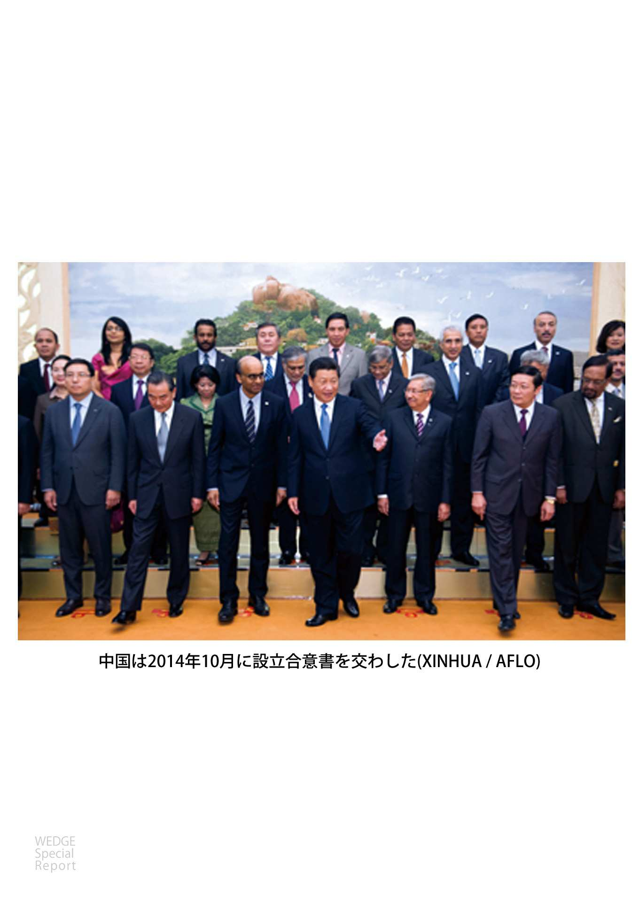
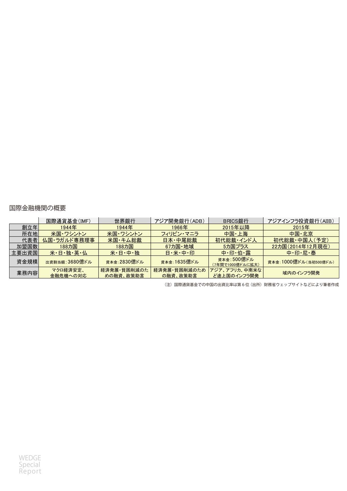
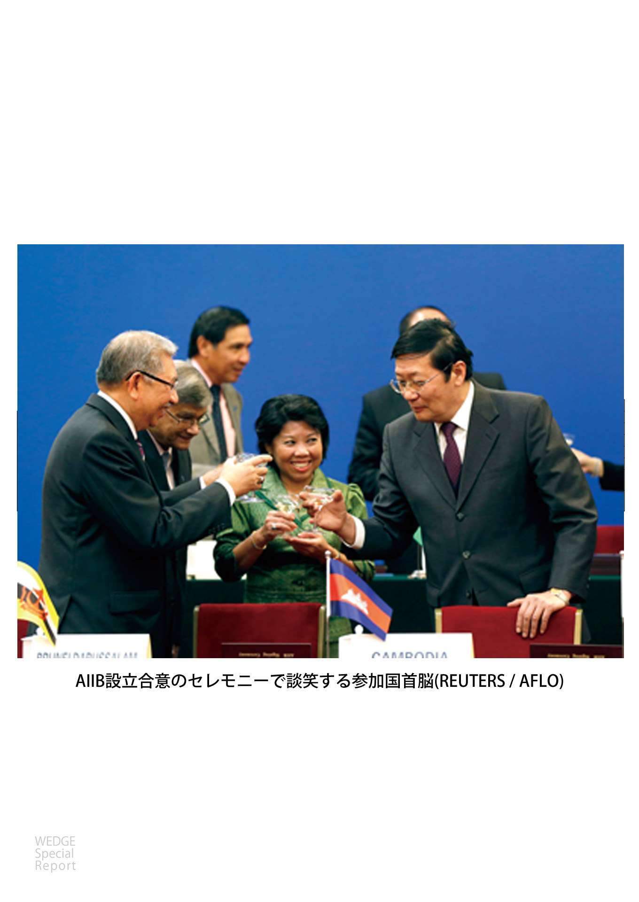
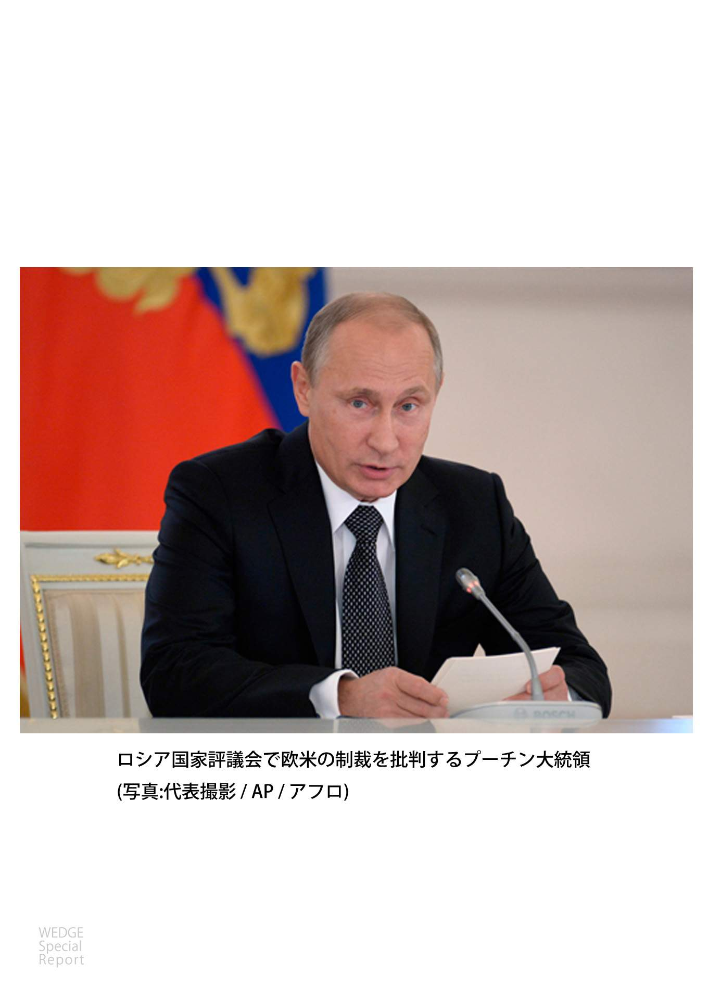
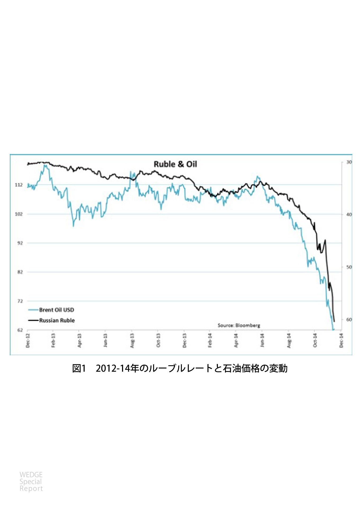
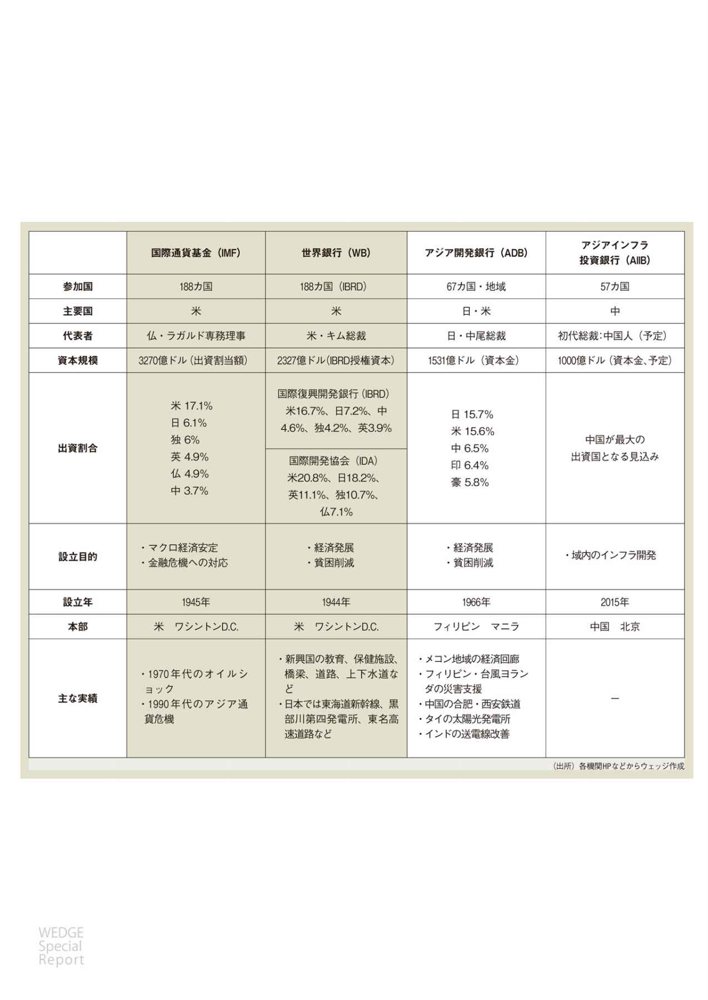
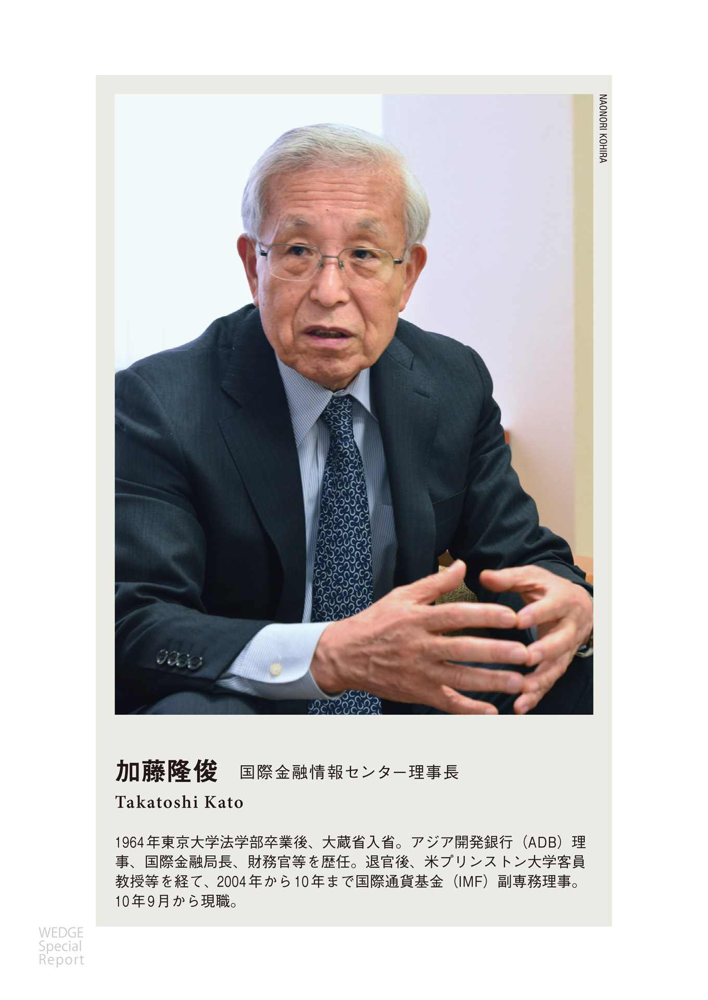
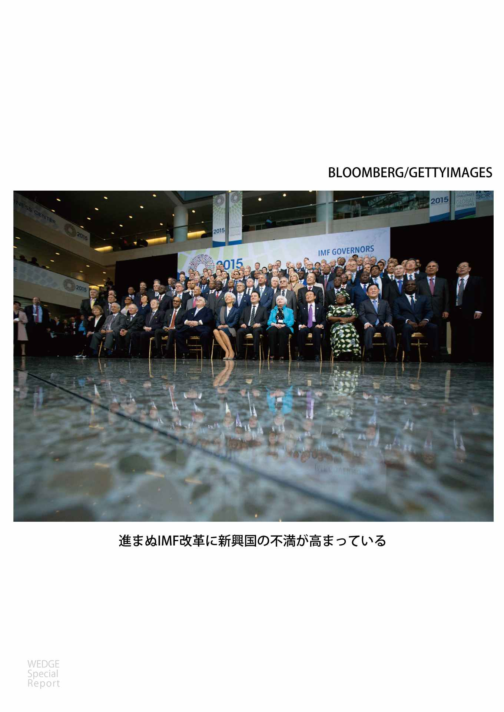
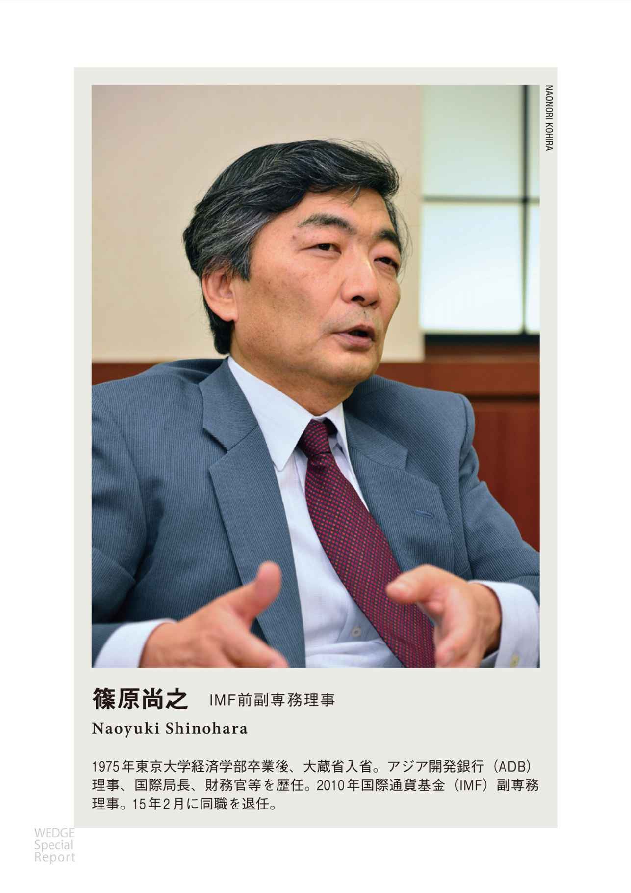
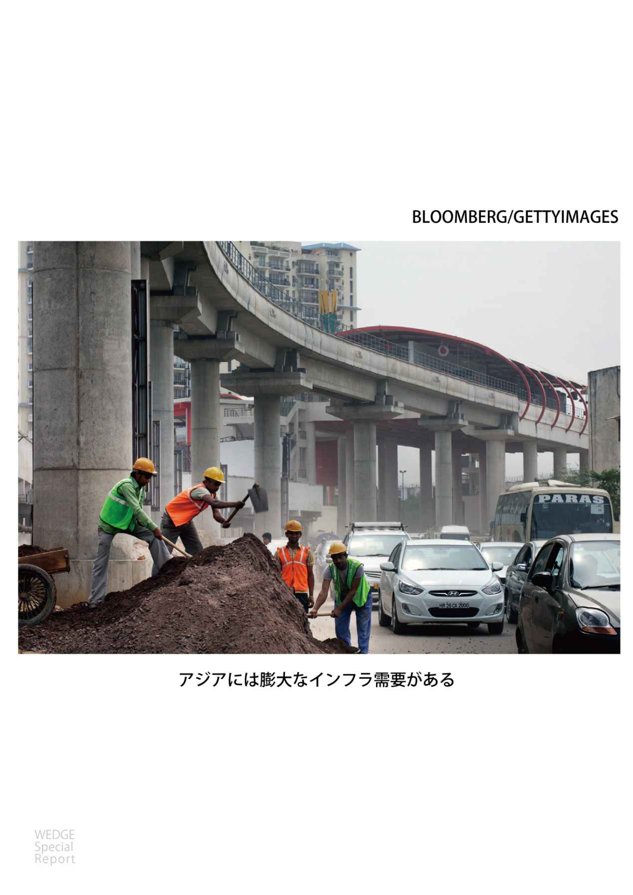

| AIIBの真実 Wedgeセレクション | |
| 河合正弘 & 梅原直樹 & 廣瀬陽子 & 加藤隆俊 & 篠原尚之 & 岡崎研究所 | |
| (2015) | |
初 出：この電子書籍は、月刊『Wedge』２０１４年１月号、２０１５年６月号に掲載された特集記事とウェブマガジン『WEDGE Infinity』で２０１４年11 月から２０１５年４月に掲載された記事を一部編集しています。記事中の事実関係、データ、肩書き等はすべて掲載当時のものです。
［表紙画像］EyeScaTch/iStock / Rawpixel Ltd/iStock
目次
中国が主導する「アジアインフラ投資銀行」 ビジョンもガバナンスもなき実態
２０１４年12 月20 日 河合正弘（東京大学公共政策大学院特任教授）
２０１４年12 月20 日 梅原直樹（国際通貨研究所 開発経済調査部 上席研究員）
中国「ばらまき外交」の限界 経済悪化が深刻なベネズエラを教訓に
２０１５年１月25 日 岡崎研究所
ＡＩＩＢに対する米国の賢明な選択 日米が足並みを乱さないことが肝要
２０１５年３月22 日 岡崎研究所
２０１５年４月１日 岡崎研究所
効果に乏しい欧米の対露制裁 拍車をかける中国 中国主導のＡＩＩＢに参加するロシア
２０１５年４月９日 廣瀬陽子（慶應義塾大学総合政策学部准教授）
２０１５年４月13 日 岡崎研究所
ブレトンウッズ体制に挑戦する中国 ＡＩＩＢの次は〝中国版ＩＭＦ〟設立か
２０１５年５月20 日 文・Wedge編集部（伊藤 悟、今野大一） 談・加藤隆俊、篠原尚之 写真・小平尚典
イントロダクション
Wedge編集部
インタビュー １ 国力増す新興国 手を焼く先進国
加藤隆俊（国際金融情報センター理事長）
インタビュー ２ 混乱する既存体制
篠原尚之（ＩＭＦ前副専務理事）
中国が主導する「アジアインフラ投資銀行」
ビジョンもガバナンスもなき実態
２０１４年12 月20 日 河合正弘
中国は２０１５年中にアジアインフラ投資銀行（以下、ＡＩＩＢ）の業務開始を目指す。本部は北京とし、総裁には中国人が就く予定だ。その実態を分析していくと、次々に課題が見えてくるが、新興国は設立を歓迎する。中国と参加国である新興国の真意とは──。
中国は２０１３年10 月にＡＩＩＢの構想を提唱し、14 年10 月には早くもＡＩＩＢ参加に関心をもつ20 カ国と設立合意書（ＭＯＵ）を交わした。11 月にインドネシアも参加することになり、中国とＡＳＥＡＮ10 カ国を含む計22 カ国が設立協定の作成プロセスを開始した。

ＡＩＩＢの目的は、アジアのインフラ建設やインフラを通じた各国間の物理的な連結性を強化し、経済発展を支援するというものだ。アジアの新興国・途上国におけるインフラニーズは高く、ＡＤＢ－ＡＤＢＩの『シームレス・アジア』（２００９）によれば、10 年から20 年の間に計８・３兆ドルの資金が必要とされる。ＡＩＩＢ設立の動きはインフラ資金を必要とするアジアの新興国・途上国の間で歓迎されている。
これに対して、米国や日本はＡＩＩＢ設立の動きに警戒感を示しており、米国は参加を検討している韓国や豪州などに参加見合わせを促したとも報道されている。
米国が警戒しているのは、中国がインフラ投資を通じて、アジア諸国を取り込み、陸のシルクロード、海のシルクロードなど中国の勢力圏づくりにＡＩＩＢを利用しようとするのではないかと疑信しているからだ。
ＡＩＩＢの設立は、同じく中国の主導で設立に向かっているＢＲＩＣＳ銀行（正式には新開発銀行）などとともに、国際通貨基金（ＩＭＦ）、世界銀行、アジア開発銀行（ＡＤＢ）などに代表される既存の国際金融秩序に挑戦するものだとも認識されている。
日本政府は、恒常的に総裁を出しているＡＤＢがアジアの途上国に大きく貢献しているという評価を得ていることから、その競争相手となるＡＩＩＢの設立構想に戸惑いを見せている。
ＡＩＩＢ設立の基本的な考え方は、設立準備委員会（多国間臨時事務局）の委員長（秘書長）である金立群氏が、北京の中央財経大学・金融学院で開催されたクローズド・ワークショップ「世界の金融ガバナンス」での発言や応答の中で示している。
要約すると、「既存の国際金融機関では、それらを主導する欧米諸国の意向が強く反映されて、必要な改革ができないので、新たな国際機関を設立することが必要だ」というものだ。

急成長するアジアでは、経済成長・発展を支えるために、毎年少なくとも７５００億ドル（ほぼ90 兆円）に上る巨額のインフラ投資が必要とされている。日本、中国を含むアジア地域は全体として経常収支黒字を計上していることにみられるように、十分な貯蓄を持っており、それをアジアのインフラ投資に振り向けていくことができる。
現在の世界経済には、日米欧の中央銀行による超金融緩和政策によって、短期流動資金は十分に供給されているが、それは必ずしも長期性のインフラ投資に結びついていない。そうした中で、中国は法定資本金１０００億ドル（当初は５００億ドル程度の資本金から出発）のＡＩＩＢを設立する動きを始めたわけである。
本部は北京とし、15 年中の業務開始をめざしている。ＡＩＩＢはアジアのインフラ建設に必要な長期資金を供給する一方、貧困削減は世銀やＡＤＢの仕事だとしている。
しかしＡＩＩＢが効果的に機能するためには、日本や米国だけでなく、参加を検討している韓国や豪州などが懸念しているいくつかの問題点を解決する必要がある。
ＡＩＩＢの問題点
問題点としてＡＩＩＢのビジョン・理念、ガバナンス、融資政策・条件、ドナー間の協調の４点が挙げられる。
（１）ビジョン・理念
新たな国際機関を設立するにあたっては、それがなぜ必要なのか理由を明らかにするとともに、使命とするビジョン・理念を明確にする必要がある。ＡＩＩＢは、「貧困削減」の使命を世銀やＡＤＢに委ねるとしつつ、それに代わるビジョンを提示していない。インフラの構築、連結性の強化、経済発展は究極の目的を実現するための手段に過ぎず、インフラを通してどのようなアジアを実現させようとしているのか、明らかでない。
ＡＩＩＢは、たとえば「持続的・包摂的なアジアの構築」などのビジョンを掲げるべきだと提唱したい。「持続的」とは環境と調和のとれた経済発展を指し、「包摂的」とは成長・発展の果実が全ての国・人々に行き渡ることを意味する。このビジョンは、今の中国の指導者にとって十分受け入れられるものだ。
（２）ガバナンス
本部は北京、総裁は中国人（初代は金立群氏と目されている）になることが予定されている。出資比率は各国の国内総生産（ＧＤＰ）に応じて決められることから、中国が最大の出資国になり、その議決権シェアは最大50 ％と突出して大きくなろう。
ＡＤＢの副総裁を務めた経験のある金立群氏によれば、「世銀やＡＤＢと異なり、本部常駐の各国政府代表者（理事）をおかず、各国代表者は政策と融資計画をあらかじめ承認・決定し、それが一定期間の間、実際に行われ成果が挙がっているかどうか確認して、経営陣を評価すべきだ」という。
つまり、常駐の理事による日常的な業務のチェックや融資案件ごとの可否の判定は行わないことになる。
常駐の理事を置かない方式は、欧州投資銀行（ＥＩＢ）でとられており、意思決定を迅速にできるというメリットがある。しかし、アジアの各加盟国間で政治的な意図が共有できず、インフラ支援の優先度が大きく異なる可能性もある。そのため、プロジェクト案件ごとの、各国代表者による頻繁なチェック・アンド・バランスが必要になるはずだ。
こうしたガバナンス面での配慮がなければ、中国は総裁と本部をともに手にし、資本の半分ほどを拠出するだけで、みずから好む国にみずから望むインフラ支援を、二国間支援に比べて２倍のレバレッジを効かせて行えることになる。
要するに中国は援助予算総額を増やさずに援助効果を倍増させ、かつＡＩＩＢを対アジア外交強化のために用いることができるのである。
中国としては、「中国はＡＩＩＢを通じてみずからの政治的な意図を実現させようとしている」という懸念を国際社会に抱かせることは得策であるまい。中国一国がＡＩＩＢの運営を独占することはない、という姿勢を明確に示すべきだ。具体的には、中国の議決権シェアを50 ％よりもはるかに低い水準に設定し、かつ本部に常駐の理事を置くべきだ。
（３）融資政策・条件
ＡＩＩＢがどのような融資政策を採用するかについては、大きな懸念がもたれている。とりわけ、インフラ事業における環境保全や人的・社会的保全の基準、調達の方式が問題だ。
ＡＩＩＢは、これらについては国際的に最善の慣行（ベストプラクティス）をめざすとしているが、金立群氏自身がもともと世銀やＡＤＢの融資決定プロセスが遅いと批判していることから、世銀やＡＤＢほどには、これらの問題を重視しない可能性がある。
世銀やＡＤＢなど既存の国際開発金融機関は、インフラプロジェクトの立ち上げにあたっては、その環境インパクト、人的・社会的インパクトに関して極めて注意深い考慮を払っている。インフラ事業は自然環境や生態系に対し大きな影響を与えることがあり、かつ住民の立ち退きの問題がある。これらの面で問題が生じると、インフラプロジェクトがストップに追い込まれうるだけでなく、国際機関としての評価・名声にも傷がつく。
そのため、世銀やＡＤＢはプロジェクトの当初からこれらの問題に取り組み、後々問題が発生するリスクを最小限に抑えようとしている。そのことが、プロジェクトの準備にある程度時間がかかることにつながっているが、これはインフラ事業の成功にとっては最低限必要なコストだろう。
インフラ事業の調達はしばしば腐敗・汚職の温床となり、その防止のために透明性の高い入札ルールを導入することが必要だ。これも世銀やＡＤＢなどは注意深く行っている。欧米諸国では、我々の税金を無駄な使い方に回したくない、腐敗している国には使いたくない、という意識が強いからだ。
（４）ドナー（資金提供者）間の協調
援助の効果を高めるためには、新興国・途上国政府自身が主体性をもって経済発展のための戦略をたてることが重要だが、加えて、ドナー間の協調が有用であることが知られている。
国際金融機関や二国間援助機関などドナー間の協調は、受け手である新興国・途上国にとって、取引コストを削減し、重複を避け、相乗効果（シナジー）を生み出すというメリットがある。
深刻な問題は、ＡＩＩＢがベストプラクティス以下の基準でインフラ融資を競い、世銀やＡＤＢからインフラプロジェクトを奪っていく可能性があることだ。そのことは世銀・ＡＤＢの融資政策の基準の引き下げ圧力につながりうる。
環境や住民への影響を十分考慮に入れてインフラ事業を進めるためには、ＡＩＩＢと世銀・ＡＤＢとの間の対話・協調を促し、非生産的な基準引き下げ競争を生まないことが必要になる。
そうした観点から、ＡＩＩＢは世銀、ＡＤＢなどと協調しつつ、加盟国のインフラプロジェクト支援を行っていくべきだ。それに加えて、ＡＩＩＢは経済協力開発機構（ＯＥＣＤ）の開発援助委員会（ＤＡＣ）と協調していくことが望ましい。開発援助委員会は世界的な視野から、新興国・途上国への経済援助の情報を共有したり、国際的なベストプラクティスに則った援助政策の共有をめざすものである。
中国によるＡＩＩＢの設立は時間の問題だろう。ＡＩＩＢは、以上述べた４つの点（ビジョン、ガバナンス、融資政策、ドナー協調）で、責任ある国際金融機関として踏み出すことを期待したい。
中国の勢力圏拡大の手段になりうるアジアインフラ投資銀行
２０１４年12 月20 日 梅原直樹
ＡＩＩＢの創設メンバー22 カ国は、中国以外は経済規模が小ぶりの国となっており、日本、米国、韓国、豪州、ニュージーランドなど、西側諸国は含まれていない。今後、理念・ガバナンス・環境基準等の明確化が進めば追加参加国も現れて来よう。

２０１４年11 月のＡＰＥＣ首脳会議は日中首脳会談に注目が集まったが、中国・習近平指導部にとっては、１年５カ月ぶりの米中首脳会談とのセットで、アジア・太平洋地域国家向けに中国の外交ビジョンを示す恰好の舞台として準備が進められた。
訪中した各国首脳に習近平主席が熱く語ったのは、２０１３年秋に自ら提唱したシルクロード経済ベルトと21 世紀海上シルクロード構想（「一帯一路」）であった。そして、この構想を具体化するための資金面の下支えとなるのがＡＩＩＢとシルクロード基金であった。アジアの経済発展をリードし、平和的発展を目指す「善良な」中国の姿をアピールするため、ＡＩＩＢは欠かせない道具立てとして準備された。
アジアにおいては８兆ドルもの膨大なインフラ需要が存在する［アジア開発銀行研究所（ＡＤＢＩ）の試算］。このインフラ建設の実現は地域に大きな発展の機会をもたらす。しかし世界銀行、ＡＤＢ、各国政府ＯＤＡだけでこれを賄うのは現実的には無理がある。そのような中、中国がＡＩＩＢという国際金融機関を設立し、新たな資金供給源として貢献するアイデアはアジア諸国にとって大いに歓迎するところであった。
中国は14 年半ばより自らの国内経済を「ニューノーマル」と呼び、成長速度を落とす「ギア・チェンジ」を進めている。その前段にあったのは、08 年より実施された大型景気刺激策である。この政策では地方債務の拡大を伴う、膨大なインフラ建設が進められたが、その結果、国内投資は一部で効率の逓減が見られている。
他方で、近隣諸国におけるインフラ需要は強く、投資効果が高い案件も多い。中国がこのような近隣・連接地域のインフラ建設を支援することは、当該国・地域の経済成長を促すだけに留まらず、中国にもその恩恵が返ってくる。例えば、カザフスタンの中国国境周辺での物流基地建設、メコンデルタ地区での道路橋梁建設、インド洋周辺国の港湾パイプライン建設等は中国経済のみならず、場合によっては安全保障上も中国にメリットをもたらす。
ＡＩＩＢは、現状の22 カ国でスタートし、米・日・豪等先進国の参加がなければ、中国政府の意向を色濃く反映した国際機関となり、ここに中国の政策性銀行・国有商業銀行・国有企業がコンソーシアムを組んで開発案件に参入してくれば、アジアインフラ案件は中国の思うように進むかも知れない。中国はアジア全体への影響力を強め、正に中国の「勢力圏」が構築できる。約４兆ドルの外貨準備を含む過剰貯蓄の還流・運用ルート拡大・多様化にもつながる。正に一挙多得という「夢」のような状況が出現しそうである。
参加国のメリットと先進国の立場
アジアの発展途上国にとってのメリットは明確である。経済発展のためにインフラ建設は必須であり、新たな資金の出し手は国籍を問わず歓迎であろう。さらに既存の国際機関との対抗上、ＡＩＩＢからは緩い審査及び返済条件で低利融資が得られたりするとの期待もあろう。
他方、先進国の立場は微妙である。自国の経済へのプラス効果は見込まれるとは言え、ＡＩＩＢへの出資決定にはその意義を国民に説明する必要がある。しかし、ＡＤＢと重複しないか、ＯＥＣＤ等で共有された援助理念や透明性の確保はできるのか等について、14 年夏の準備段階では確信が持てず、ＡＩＩＢは中国自らの利益のため国際金融機関を複製して、既存秩序に挑戦する意図があるのではないかとの疑惑を払拭する材料も十分でなかった。
日本の立場はさらに難しい。日本は米国とともにＡＤＢ最大出資国であり、歴代総裁を輩出してきた。他方でＡＩＩＢ提唱者である中国とは長らく首脳会談も開催できず、世界を心配させるほどに相互信頼関係と対話が失われていた。
そのような中で、ＡＩＩＢは中国が50 ％近くを出資、本部は北京、トップも中国政府が派遣と、中国の「面子」ばかりを優先したユニラテラルな代物として設計され、後戻りができないところに来ており、正式設立は時間の問題である。ＡＩＩＢの今後を注視していきたい。
中国「ばらまき外交」の限界
経済悪化が深刻なベネズエラを教訓に
２０１５年１月25 日 岡崎研究所
フィナンシャルタイムズ紙は２０１５年１月25 日付社説で、長年にわたる誤った経済政策運営によりベネズエラの経済・社会は深刻な代償を払っているが、同国の最大の債権国である中国も、法外で甘い条件での貸し付けが大きな問題を生むことを学んでいる、と指摘しています。
すなわち、ベネズエラのニコラス・マドゥロ大統領は緊急資金援助を求め中国とサウジアラビアを訪問したが、明らかに何の成果もなかった。投資家たちは、ベネズエラのベンチマーク国債を「デフォルトの危険あり」のレベルまで落とした。ベネズエラでは、何千人もの人々がカラカスのスーパーの前に列をなし、インフレは約70 ％に至り、長年の経済政策の運営ミスの痛い代償を払っている。
ベネズエラ最大の債権国である中国にとって、これは重大なことである。この状況は、中国が続けてきた、ほとんど条件もなく、透明性のないままに、多くの場合は資源を対価に多額のローンを提供するという形の対政府資金援助の実情を中国に付きている。
ベネズエラ政府は、中国からの貸し付けは返済が石油で行われるので負債には当たらないとして、議会の承認を得ていない。その結果、この借金は国家予算に含まれず、いかなる運営制度や石油収益分配法のコントロールも受けていない。しかし、国営石油会社ＰＤＶＳＡが石油を対価とした負債の返済を予定通りできなくなった際、中央銀行からの借入に迫られた。これがハードカーレンシーの不足に輪をかけ、インフレを悪化させ、食料の輸入を妨げることになった。
ベネズエラ情勢の急激な悪化は、中国が国際社会により深く関与するにあたり、大きな教訓となる。つまり、非伝統的な政策を信じるカリスマ性のある指導者に甘い条件で貸し付けを行うと破壊的事態を生む、ということである。
中国は新興国に対し気前よく大金を貸しており、ここでベネズエラでの経験から貸出条件を厳しくすると国際的な開発環境に大きな影響を与える可能性がある。しかし、中国が「底なしの貸し出し外交」（open-wallet diplomacy）に制約を加え始めたのはベネズエラだけではない。ジンバブエは、２０１４年１００億ドルの救済パッケージを断られ、約束された20 億ドル貸付には具体的な石炭鉱山のプロジェクトおよび将来の採掘による税収が担保とされた。中国は、世界銀行やＩＭＦ、アジア開発銀行といった多国間機関が貸し付けに厳しい条件をつけるにはそれなりの理由がある、ということを学んでいる、と指摘しています。
出典：'China's international lending has its limits'（Financial Times, January 25, 2015）
＊ ＊ ＊
石油大国ベネズエラの経済は破産寸前で、借金を増やすベネズエラ側にも大きな問題があるが、独裁的指導者に甘い条件で資源と交換に大金を貸し付ける中国のやり方に限界があることを中国も思い知ってきている、という分析です。ベネズエラの例は、中国による、独裁体制に対する野放図な「ばら撒き外交」の限界をよく示していると言えます。
２０１３年１月に死去したチャベス前大統領は、脱アメリカを図り、ロシアや中国との関係を深め、石油等の資源を対価に、資金ばかりでなく両国から武器も調達していました。ベネズエラの財政は石油価格が１バレル１１７ドル以上でないと成り立たないとされていましたが、今や石油価格は１バレル50 ドル台にまで下がっています。そして、中国への輸出量（１日50 万バレル）の半分が借金の返済に充てられ、他に財政を補う道がないとなれば、破産は時間の問題ということになります。ベネズエラは、伝統的資金調達の枠組みから自らを占め出し中国に依存したわけですから、今さら国際金融市場に戻ることができるのかという疑問があります。
中国にすれば、政情不安定な中東以外からの資源確保、それもアメリカの裏庭に食い込むという政策から、ベネズエラやアルゼンチン、ブラジルへ大風呂敷を広げてきました。中国は国際金融制度の恩恵を受けてきましたが、透明性、法や規制、その下での平等を原則とする既存の制度は、中国には使い勝手が悪いといえます。しかし、中国のやり方は大きな問題を抱えていることが明らかになりました。これまでＩＭＦや世銀の融資条件が不適切で状況を悪化させた場合、国際機関の責任が問われてきました。中国はすでに各国への融資条件を見直していますが、ベネズエラが国家破産をし、経済がますます悪化し、さらなる社会不安が広がれば、中国の責任と見なされることになります。
中国は、ベネズエラのような痛い経験などを経て、国際金融制度のルールにはそれなりに意味があることを理解し始め、さらには既存のルールを学ぼうとさえしているようにも見えます。日米には、アジアインフラ投資銀行（ＡＩＩＢ）はアジア開発銀行（ＡＤＢ）を脅かす、という懸念があります。透明性やルールを無視した中国のこれまでのやり方や、影響力増大にそうした機関を利用しようとする意図を考えれば、日米の懸念には理由があります。他方、ＡＤＢのインフラ資金が不十分であることも事実です。中国は、ＡＤＢからノウハウを学ぼうとしており、ＡＤＢもそれに応じ協力しているようです。中国が国際金融制度を通じて何をしようとしているか、警戒を解くべきではありませんが、今は、米国も日本も、苦労して築いてきた国際金融制度に中国を上手く取り込み、その豊富な資金を活用することを目指す、良い機会なのではないでしょうか。
ＡＩＩＢに対する米国の賢明な選択
日米が足並みを乱さないことが肝要
２０１５年３月22 日 岡崎研究所
西側各国がアジアインフラ投資銀行（ＡＩＩＢ）への参加を雪崩を打って表明したことにつき、数多くの論説が発表されていますが、その中から、米外交問題評議会のエコノミー上席研究員の２０１５年３月21 日付論説と、３月22 日付ワシントン・ポスト紙社説を紹介します。両者とも、米国はＡＩＩＢに参加するのでもなく、他国の参加に反対するのでもなく、成り行きを見守るべきであると言っています。
エコノミーの論旨は以下の通り。
すなわち、ＡＩＩＢに対する米の対応には、（１）ＡＩＩＢの統治手続きが保証されるまで同盟国が参加しないよう働き続ける、（２）米国自体が参加する、（３）そのままにしておく、の３つの選択肢があるが、（１）は一層努力しても意味がない、（２）は、ＡＩＩＢの内部から統治に口が出せる、米国企業に機会を与えるなどの利点もあるが、面子の問題もあり今さら参加できない。
とすると選択肢は（３）であり、他の国の参加に圧力を加えず、ＡＩＩＢの実施を見守るのである。中国の海外投資はザンビア、ミャンマー、ベトナム、ブラジル、スリランカなどで大きな困難に直面してきており、ＡＩＩＢが同じ問題を起こせば、中国にとってのみならず、参加国全体の汚点となる。世銀やアジア開銀と同じ基準で運営されれば、開発金融の追加という意味で歓迎すべきである。米国はアジア太平洋地域のすべての機構に参加する必要はない。
米国にとって重要なのは中国のイニシアチブにすべて反対することではなく、リバランスで米国の理念や制度を進めることである。ＡＩＩＢは米国の重荷となっていたが、その重荷をおろすときである、と述べています。
出典：Elizabeth Economy, 'The AIIB Debacle: What Washington Should Do Now'（Diplomat, March 21, 2015）
ワシントン・ポスト社説の論旨は以下の通り。
すなわち、英、独、仏、伊がＡＩＩＢ参加を表明し、韓国と豪州の参加しそうなことは、米国のアジアにおける影響力の衰退を意味する。
もし議会が中国の投票権を増大させる形でのＩＭＦへの増資についてのオバマ政権の要請を承認していたら、事態は異なっていたかもしれないが、今からＩＭＦ改正をしても遅すぎる。
オバマ政権は、世銀の強化の努力を倍増させ、ＴＰＰの議会承認を取り付けることに努めるべきである。ＴＰＰはアジア・太平洋地域の経済枠組みを、中国の重商主義ではなく、西側経済の上に作り上げるものである。
ＡＩＩＢが米政府が考えるように中国の地政学的攻勢であるとすれば、ＴＰＰはそれをかわす適切な方法である、と述べています。
出典：'China's new development bank bodes poorly for the U.S.'（Washington Post, March 22, 2015）
＊ ＊ ＊
エコノミーの論説もＷＰの社説も、米国はＡＩＩＢに参加もせず、他国の参加に反対もせず、成り行きを見守るべきであると言っています。実際、それ以外に選択肢はないでしょう。それは米国にとって賢明な選択と思います。日本も米国と同様に、成り行きを見守るべきです。
ＡＩＩＢは中国が世銀、アジア開銀に対抗して、中国主導でアジアのインフラ投資を促進しようとするものです。アジアにおけるインフラ投資の需要は巨大で、世銀、アジア開銀では対処しきれません。その需要に応えるという意味ではＡＩＩＢは存在意義があります。しかし、問題は中国の意図と、新銀行のガバナンスです。中国のこれまでの開発融資のようなやり方では、問題が生じます。英仏独などは、参加するからには適正な融資が行われるよう働きかけるべきです。
同時に、米国はＩＭＦ、世銀を改革し、中国や途上国により発言権を与えるよう図るべきでしょう。ＷＰは、もし議会が中国の投票権を増大させる形でのＩＭＦへの増資についてのオバマ政権の要請を承認していたら、事態は異なっていたかもしれない、と言っているが、たとえＩＭＦ改革が行われていたとしても、中国はＡＩＩＢ構想を発表していたと思います。中国の狙いはブレトン・ウッズ体制に挑戦することだからです。ただ、今からＩＭＦを改革しても遅すぎる、ということはないと思います。ＩＭＦをよりバランスのとれたものにすることは、ＩＭＦ批判に応えるもので、米国の立場をかえって強くすることになるでしょう。
なお、最近、日本国内ではＡＩＩＢに関する「日米の孤立」を否定的に指摘する向きがありますが、中国の影響力強化の企てを前に、日米が足並みを乱さないことこそが肝要です。日本政府には、日米が結束してＡＩＩＢには慎重な態度をとるという方針を堅持することが望まれます。
台湾の拙速なＡＩＩＢ参加表明
２０１５年４月１日 岡崎研究所
台北タイムズは、２０１５年４月１日付社説で、馬英九が行政院（内閣）、立法院（議会）と相談もせずにアジア・インフラ投資銀行（ＡＩＩＢ）への参加を表明したことを批判しています。
すなわち、馬英九は習近平との会談を希望したが果たせず、そのかわり蕭万長・前副総統と習近平の会談を設定できたことを成果として喧伝している。しかし、海南島のボアオ・フォーラムでの会談は45 秒しか続かず、蕭がＡＩＩＢへの参加意図を表明したのに対し、習が「ＯＫ」と言ったに過ぎず、軽くあしらわれた。
この銀行は習の「一帯一路（陸・海洋のシルクロード構想）」政策の一部である。内需拡大と中国の外交・経済的アジェンダを推進し、米欧日が主導する世銀とアジア開発銀に挑戦するものである。
ＡＩＩＢはインフラ開発に焦点を当て、貧困削減を目指す世銀、アジ銀とは違う。ＡＩＩＢの投資資本は１０００億ドルで大きくなく、他の２つの銀行と競争できないかもしれない。しかし中国がその経済力を政治的に生かし、米欧に対抗する道を作ったということははっきりしている。それで、米日などは様子見の姿勢に出ている。
ＡＩＩＢの事業は中国の銀行関係者と緊密な関係になろう。問題は、中国の金融システムに欠陥があり、腐敗その他の不正行為が多いことである。こういう国がアジアの融資者の役割をどうして果たせるのか。
台湾にとり、ＡＩＩＢは投資の機会を提供しようが、参加問題は複雑である。どんな名称や条件で参加するのか。それに馬英九が参加意図を明らかにした後、省庁協議が始められた。これではサービス協定事案の二の舞になる。
馬は中国寄りであり、何も学ばない。レームダックの総統がこんな重要決定をしていいのかという問題はさておいても、省庁は包括的で慎重な検討をし、野党とも協議し、一般社会にも考え方を説明した後、決定を下すべきである。
大統領が内閣、立法府、党を排除して密室で取引し続けるのを許してはならない。馬英九が今のやり方を続ければ、馬英九への抗議の波がまた出てこよう、と指摘しています。
出典：'Jumping on the AIIB bandwagon'（Taipei Times, April 1, 2015）
＊ ＊ ＊
馬英九政権はＡＩＩＢへの参加を表明し、中国側は「台湾が適切な名称を使用する限り参加を歓迎する」と応じましたが、結局、中国は台湾のＡＩＩＢへの創設メンバーとしての加盟は拒否しました。
馬政権の本件についての決定が手続きを十分に踏まず拙速に行われたというのは、この社説の指摘する通りでしょう。
馬政権は、ＡＩＩＢ参加のメリットについて、経済的には、台湾企業、特に建設業の商機が増える、政治的には、中台関係にプラスになる、台湾の国際的地位の向上になる、と強調しています。しかし、台湾企業がアジアのインフラ整備事業に参加できるかもしれないといっても、機会は限られるでしょう。さらに、現在、台湾人の多くが抱いている不満は、馬政権は大企業優遇で格差を放置しているということですから、ＡＩＩＢへの参加は台湾の大衆には魅力的に映らないでしょう。台湾の国際的地位の向上になるかどうかは、どういう資格、名称で参加できるかによります。この点、中国は、「一つの中国」の枠組みを厳守することを求めており、それを受け入れれば、台湾の国際的地位にとり、かえってマイナスにもなりかねません。馬英九がＡＩＩＢへの参加を表明した直後に、小規模ではありますが、総統府周辺で、「一つの中国」の下でのＡＩＩＢ参加に反対する学生デモが起こっています。
台湾では、２０１６年１月には総統選挙があり、諸問題が争点化されやすい「政治の季節」になってきています。両岸サービス貿易協定が手続きをよく踏まないでなされたなどの批判から、議会が占拠された「ひまわり運動」が２０１４年にありました。ＡＩＩＢ参加問題も、上述の通り既に学生デモが発生するなどしており、対応を誤れば、「ひまわり運動」のようなことに至る可能性は排除できないでしょう。
効果に乏しい欧米の対露制裁 拍車をかける中国
中国主導のＡＩＩＢに参加するロシア
２０１５年４月９日 廣瀬陽子
ウクライナ危機の影響もあり、２０１４年末からロシアが経済危機に瀕している。しかし、米国が主導している対露制裁は実は、効果が出ていないどころか、アメリカの世界経済戦略を脅かす結果すら生んでいる。さらにその趨勢を刺激しているのが中国である。本稿では、制裁がうまくいっていない理由、そして中国の動向とその影響について考えてゆく。
対露制裁を主導する米国のジレンマ
ウクライナ危機に伴って、次第に強化されてきた欧米主導の対露制裁は、最近ではその効果が疑われており、むしろ米国が被害を受けているという論調も珍しくなくなっている。
まず、米国は冷戦後にロシアを含む旧共産国を取り込んで、グローバルな政治経済システムを構築しようとしていたが、ロシアに通商・金融面で制裁を課すと、ロシアをグローバルな政治経済システムから締め出すことになり、結果、米国は冷戦後の努力の成果をみすみす無にしているとも言える。
加えて、このような経済制裁によって、他の国々が米国主導のグローバルな金融システムに組み込まれると、何かあったときに制裁によって大きな被害を受けうると考えてしまい、戦略的に警戒するようになる。そうすれば、ロシアの離脱のみならず、さらに多くのアクターが米国主導の政治経済システムに背を向け、同システムは行き詰まる可能性が高くなる。
さらに、経済制裁のターゲットは主にプーチンの取り巻き、国営企業やその関連企業であったが、制裁の対象は拡大している。また、経済制裁はターゲットにのみ影響を与えるわけではなく、その影響は独立系の民間企業にもドミノ式に及んでいる。そのダメージはロシアの民間経済のみならず、グローバルな政治経済システムにとっても深刻である。なぜなら、独立系の民間企業は欧米との取引や関係の強化を目指していたわけで、制裁はそのようなロシアの一般人が起こした優良企業にも大きな打撃を与えることとなり、それはさらに欧米が制裁の対象としていないロシアの一般人の経済グローバル化にも悪影響になる。

むしろロシアにとって良い面も？
そして、制裁はロシア国民の反欧米意識を高め、ひいてはプーチン人気を高めることにもつながっているという。前述の拙稿で述べたように、ロシア経済の悪化はウクライナ危機の前から予測されていたことであった。そのため、仮にウクライナ危機が起こらなかったとしても、おそらくロシア経済は落ち込んでいたと想定できるのだが、もしそうなっていれば、プーチンの失策として批判が高まっていたことだろう。だが、欧米による経済制裁が発動されたことにより、政権は経済の悪化を全て欧米のせいにすることができ、インテリ層などは別としても、国民の多くは経済の悪化に関する不満を欧米に向ける傾向が強まる。その結果、国民の愛国心も高まり、ウクライナ問題でも強気の姿勢を崩さず、欧米と対峙するプーチンはますます尊敬の対象になりうるのであり、プーチンの支持率も高まると考えられる。
最後に、これは完全に「最もうまくいった」場合の仮説に過ぎないが、この制裁がロシアの経済システムを根本的に改善するきっかけとなる可能性もある。ロシアは制裁および自らが発動した報復措置により、トルコ、南米、中国などからの輸入代替を強化する一方、国内生産の充実と自給率の拡大を推進している。さらに、かねてより問題となっていた国内の汚職廃絶をも成功に導けるかもしれない。しかも、そのプロセスでは、国民が痛みを伴うこととなるが、国民はその痛みも欧米のせいだと感じて耐える可能性が高くなる。こうして、もし国内経済の立て直しが、国内自給率拡大や汚職廃絶を伴う形で成功してしまえば、それはプーチンの歴史的偉業となってしまうだろう。
さらに、ルーブル暴落がむしろロシアにとってメリットとなっているという議論すらある。後掲の図１を見ていただきたい。石油価格とルーブルレートは実に綺麗に連動しているように見える。ロシアのエネルギー収入は外貨であるため、いくら石油価格が下落しても、それと近い率でルーブルレートが下がれば、国内に流通するルーブルは目減りしないということになる。そのため、ルーブル下落はロシア中央銀行が関与しているという陰謀論すら主張するエコノミストがいるほどだ。ともあれ、国内のルーブルが温存されている以上、ルーブル下落で痛い思いをするのは、海外旅行や輸入品を購入する者や外貨を所有する者のみだということになる。確かに一連の制裁により、モノ不足、インフレなど、多くの国民が経済問題で打撃を受けているが、このように考えれば、ロシア国内でルーブルのみを用いて生活する以上、極端な打撃を受けることは避けられそうだ。

さらに、この状況は上述の国内自給率拡大や汚職廃絶にも貢献する。ルーブルで経済を回すことになるので、国内産業振興を促進するだけでなく、内需を高め、海外依存率も下がることから、自立性の確保にも役立つだろう。また、海外に巨額の富を確保している財閥や富裕層には打撃になる一方、彼らがロシア国内に財を戻すインセンティブにもなり、マネーロンダリングをはじめとした国際的な汚職廃絶にも役立つ可能性があるのである。
このように、制裁は、欧米が目指してきたグローバルな政治経済システムを破壊する一方、プーチン政権に利点すら提供していることになりうるのだ。
中国の対露支援の動き
さらに米国の思惑を邪魔するかのような動きを見せているのが中国だ。
ロシアはかねてより、欧米の対露制裁は無意味であると発言してきたが、２０１４年12 月には、王毅外務大臣は「ロシアは危機を乗り越える力がある」として、必要であれば中国は可能な限りの支援を行うと主張したし、高虎城商務相はルーブル危機にもかかわらず、両国間の貿易は１０００億ドルの目標を実現するだろうと予測した。
また、２０１４年は、ロシアの価格面での譲歩があったと報じられているとはいえ、中国がロシア・ガス購入の４０００億ドル、30 年の契約に署名したことも話題となったし、中国とロシアの李克強、ドミトリー・メドベージェフの両首相が、カザフスタンにおける会談で鉄道、インフラ、および、中国北部にあるロシアの極東地域開発に関する広範囲な契約に調印したとも報じられている。また、中国側は、借款やロシア国内へのインフラ投資を大きな規模で行う用意があることも示している。
実際にもそのような動きはすでに見られており、例えば、２０１５年３月末には、中国がロシア初の高速鉄道となる「モスクワ─カザン高速鉄道」（総工費１兆６８０億ルーブルと推定）を建設するため、中露で折半出資の合弁会社を立ち上げ、中国は３０００億ルーブル（約６３００億円）を投資する計画が報じられている（内、５００億ルーブルは法定資本としての投入、２５００億ルーブルは中国の各銀行からの20 年契約での融資の形をとる）。
こうした動きは、明らかに欧米の対露制裁の効果を減じうるものである。
アジアインフラ投資銀行に参加する多くの欧州諸国
また、中国メディアは、対露支援は上海協力機構（ＳＣＯ）やＢＲＩＣＳのような枠組みを利用して行うべきだという識者のコメントも引用しているが、ここで注目すべきことは、ＳＣＯもＢＲＩＣＳも欧米諸国が全く加盟していない組織だということである。
中国の外貨準備高は、３・８９兆ドルと言われており、少なくとも帳簿上では世界最大となっている。この経済力を糧に、中国はグローバル経済への新たな挑戦を始めている。それこそが、中国が２０１５年中に業務開始を目指しているアジア向けの国際開発金融機関、アジアインフラ投資銀行（ＡＩＩＢ）である。その創設の目的を、中国は日米が主導するアジア開発銀行（ＡＤＢ）では賄いきれていない、年々増額するアジアのインフラ整備に必要な資金対策を代替・補完的に行うことだとしているが、この動きが、米国主導のブレトンウッズ体制への挑戦であるというコメントは頻繁に見られる。実際、ＡＤＢを主導する日本と米国は、ＡＩＩＢのガバナンスの欠如、出資の不透明性、融資の高い基準での維持への疑問などの理由で、参加を見合わせている状況だ。
だが２０１５年３月12 日にＧ７メンバーとしては初めて英国がＡＩＩＢへの参加を表明してから、31 日の申請期限までに連鎖的に参加を表明し、結果的に40 カ国が参加を表明した。欧州の大国も多く参加していること、特に英国の参加は米国にとって大きな打撃だったという。英国は米国の長年の経済パートナーであったが、ここにきて、英国が米国を裏切ったとも読み取れるからである。なお、多くの欧州諸国が締め切り直前になってバタバタとＡＩＩＢに参加表明をした一つの理由に、上述のように対露制裁で米国と経済の運命を共にすることに対する脅威が増してしまったということもあると言われている。
そして、当初難色を示していたロシアもブラジルと同日となる３月28 日に参加を表明した。これによりＢＲＩＣＳの南アフリカを除く全てのメンバーがＡＩＩＢに参加表明をしたことになる。
なお、ＢＲＩＣＳ諸国は定期的に首脳級をはじめとした諸レベルの会議を開催し、２０１４年７月には、国際開発金融機関であり、既にある世界銀行と国際通貨基金に代わってインフラ整備資金などを融資することを目的とする「新開発銀行」（「ＢＲＩＣＳ開発銀行」とも）の設立にも署名している。ロシアのシルアノフ財務相はこれを「ミニＩＭＦ」と呼び、ＢＲＩＣＳ諸国が資本逃避や通貨下落のリスクに陥った際に緊急財源としての役割を果たすことを目的とすると説明する。予防策や経済危機後の対処のための補助として、同基金との通貨スワップ取引を利用できるという。
この基金には、中国が４１０億ドル、南アフリカが50 億ドル、ロシア、ブラジル、インドがそれぞれ１８０億ドルを自国の外貨準備から拠出し、中国の圧倒的強さが目立つが、経済のみならず、外交でもＢＲＩＣＳ諸国の共同歩調が目立つようになってきたことの大きな事例だといえる。「新開発銀行」を、危機後の世界秩序を構築する方向性として大きな意味を持つ一歩だと評価する識者もいるほどだ。なお、新開発銀行は中国が主導しているが、ロシアはかねてより中国とＢＲＩＣＳの中で主導権争いをしており中国に完全にお株を奪われないようにロシアが必死で動いている様子が見られる。
新開発銀行かＡＩＩＢか
ロシアのメリットと懸念
実はロシアは最初から積極的にＡＩＩＢへの参加表明をしたわけではない。この参加に関するロシアの事情や議論を検討してみよう。
ロシアは、ＡＩＩＢ参加の申請を行ったが、ロシアの出資比率は現状ではまだ明らかにされていない。ロシアの参加のメリットとしては、プロジェクトへの優遇的な資金供与などの特恵が得られること、完全な権利を有して銀行運営に参加する可能性があること、軍事大国としてばかりでなく経済大国としてのアピールができること、などがあるとされている。
だが、ＡＩＩＢへの懸念も少なからず主張されている。たとえば、ＡＩＩＢが西側の金融機関に対抗しうるグローバルな機関に成長するまでの、またＡＩＩＢが米国主導の経済システムの打撃になる道のりは極めて厳しいと考えられているし、このプロセスにおいて、ロシアが望む中国と米国の関係悪化には大きな影響は生まれないだろうとも予測されている。
加えて、すでにロシアが参加している新開発銀行とＡＩＩＢの類似性とそれによるリスクも指摘されている。双方は共に、インフラ投資に主眼を置いており、定款資本の額もほぼ同レベルである。またどちらも現在、スタート段階にあるということも共通しており、両方に関われば、共倒れする可能性があることも危惧されている。ロシアは、どちらかより有望な銀行を選んで、そちらの発展に集中すべきではないかという意見もあるのである。
だが、新開発銀行とＡＩＩＢの両方に参加することに意義があるという意見もある。ＡＩＩＢはアジアというロシアにとってとても重要な地域におけるロシア経済の統合強化のツールになりうるというのだ。短期的なリソース誘致という観点にとどまらず、アジアへの投資を長期的視野で考えれば、必ず有益だという。
ともあれ、新開発銀行とＡＩＩＢが並行して進められているのは間違いなく、またそれが国際通貨基金（ＩＭＦ）や世界銀行（ＷＢ）、そしてＡＤＢなどの既存のグローバル経済システムや金融機構の不十分さへの挑戦が二方向から始まりつつあると考えられるだろう。そのような前提の下、新開発銀行とＡＩＩＢは競争ではなく協調の道を歩むことができ、それにより、両行が世銀などへの脅威となるのだと主張する論者もいる。
このように、ウクライナ危機の下での、中国のグローバル経済に対する新たな動き、そして中国・ロシアの外交・経済面での接近は（お互いに強い警戒心を持っていて、対米政策など大きなレベル以外では実はライバル関係にあるが）、ロシアの経済にとって有利であると同時に、グローバル経済への挑戦となりつつあり、対露制裁の意味をますますなくしているのである。
とはいえ、ロシアの経済が厳しいことに間違いはない。ロシアはまずは自国の経済の立て直しを早期に成し遂げることによって政権の安定維持を図りながら、対外的な経済協力を強化して、経済大国としての立場を世界にアピールしていくことを目指していくだろう。
マクロ経済から見たＡＩＩＢ支持論の落とし穴
２０１５年４月13 日 岡崎研究所
米コロンビア大学教授でノーベル経済学賞受賞者のスティグリッツが、４月13 日付Project Syndicateのサイトで、アジアインフラ投資銀行（ＡＩＩＢ）について、援助の流れを多国間化し貯蓄と投資をグローバルな規模で仲介する試みであると評価し、米国による反対を非難しています。
すなわち、ＡＩＩＢの設立と、多くの国の政府によるそれに対する支持の決定は、ＩＭＦ・世銀も含め、普遍的に祝福すべきことと思われるが、奇妙なことに、裕福な欧州の国々の参加は米当局者の怒りを触発した。
米国のＡＩＩＢへの反対は、経済的優先順位をアジアに置いていると述べていることと矛盾する。
中国が証明する通り、インフラ投資は大いに経済発展に貢献する。ＡＩＩＢは、人、モノ、アイデアを自由に流入させ、投資を行き渡らせる効果を、アジアの他の地域にももたらすであろう。オバマ政権は貿易の価値を支持しているが、途上国では関税よりもインフラの欠如が遥かに深刻な障壁である。
ＡＩＩＢのような基金には、さらに重要なグローバルなメリットがある。現在、世界は総需要の不足に悩まされている。
ベン・バーナンキは、ＦＲＢ議長時代に、この問題を誤って「世界的貯蓄過剰」と言ったが、膨大なインフラ需要のある世界では、問題は、貯蓄過剰や投資機会の欠如ではなく、金融システムが貯蓄と投資をグローバルな規模で仲介できていないことである。それゆえ、ＡＩＩＢは、グローバルな総需要に対し、ささやかながら大いに必要な後押しをし得る。
我々は、資金の流れを多国間化しようとする、中国のイニシアチブを歓迎すべきである。それは、第二次大戦後、それまで圧倒的に米国から来ていた経済発展資金を世銀の設立により多国間化した、米国の政策の模倣である。
２０１４年７月に設立されたＢＲＩＣＳ銀行を含む、援助の流れを多国間化する新たな試みは、同様に、グローバルな発展に大きく寄与しよう。数年前、アジ開銀は競争的多様主義の価値を擁護したが、ＡＩＩＢは、その考え方を開発金融において試す機会を提供する。
米国のＡＩＩＢへの反対は、１９９０年代末期の「新宮沢構想」への反対に似ている。当時も今も、多極化が進む世界において、米国はＧ１であり続けたがっている。資金の欠如と、危機対応についての誤った考えへの米国の固執が相俟って、景気停滞を必要以上に深く長いものにさせてしまった。
インフラ政策が他の政策領域よりも、イデオロギーと特別な利益の影響を遥かに受けないことを考えれば、米国のＡＩＩＢへの反対は、ますます理解し難い。さらに、インフラ投資における環境、社会保護の必要性は、多国間の枠組みにおいてこそ、より効果的に議論されることができよう。
英仏伊独、その他ＡＩＩＢへの参加を決定した国々は祝福されるべきである。欧州とアジアの他の国々が参加することで、インフラ改善の助けとなり、中国と同様、アジアの他の地域の生活水準を上げ得ると期待される、と論じています。
出典：Joseph E. Stiglitz, 'Asia's Multilateralism'（Project Syndicate, April 13, 2015）
＊ ＊ ＊
ＡＩＩＢを専らマクロ経済問題の視点から論じた論説です。
米国のＡＩＩＢ反対に対するスティグリッツの批判のうち、米国が反対しているのは、米国が多極化が進む世界において、Ｇ１であり続けたがっているからであるという点は一理あります。中国は今や世界第二の経済大国であり、それが世界経済のガバナンスに反映されてしかるべきです。しかし、米国は、例えばＩＭＦで中国により大きな議決権を与えることに反対しています。もっとも、反対したのは米政府ではなく米議会です。米国は世界経済に占める中国の地位に見合った役割を中国に認めるべきですが、世界経済の現実を直視しようとしないのは米議会なのかも知れません。
ＡＩＩＢがアジアの膨大な投資需要にささやかながら貢献するものであるという点は、その通りです。スティグリッツは、現在の世界経済の問題は、金融システムが世界的に過剰な貯蓄と過小な投資を仲介できていないことであると言い、その点ＡＩＩＢは重要な役割を果たすと言っています。ただ、世界的な貯蓄過剰の中心は民間資金であり、ＡＩＩＢが扱うのは公的資金です。ＡＩＩＢが世界的貯蓄過剰の軽減にささやかながら貢献するというのはどうでしょうか。スティグリッツはノーベル賞を受賞した経済学者ですが、疑問を呈さざるを得ません。
スティグリッツの論は、中国が専ら経済的観点からＡＩＩＢを創設すると言っているに等しいですが、やはり、中国によるＡＩＩＢ創設の政治的意図が考察されなければなりません。中国の意図が、アジア地域での影響力の増大を目指していることは間違いありません。ＡＩＩＢの創設自体、中国の影響力の増大を意味しますが、今後中国がさらに影響力を増すようにＡＩＩＢを運営しようとするか、注視しなければなりません。ＡＩＩＢを専ら経済問題として捉える、スティグリッツの論は、片手落ちと言えるでしょう。
ブレトンウッズ体制に挑戦する中国
ＡＩＩＢの次は〝中国版ＩＭＦ〟設立か
アジアインフラ投資銀行（ＡＩＩＢ）は「初めの一歩」か──。
中国はアメリカ優位の源泉となってきたブレトンウッズ体制へ挑戦状を突き付けている。
２０１５年５月20 日 文・Wedge編集部（伊藤 悟、今野大一） 談・加藤隆俊、篠原尚之 写真・小平尚典
イントロダクション
「覇権国アメリカ」の原点ブレトンウッズ体制
ブレトンウッズ体制の中核を担う世界銀行と国際通貨基金（ＩＭＦ）。
中国は新興国を巻き込み、世界銀行のライバルになり得るＡＩＩＢを設立した。
文・Wedge編集部
ブレトンウッズ体制とは
１９４４年に欧米の大国が主導して発足させた通貨体制。金だけを国際通貨とするそれまでの金本位制ではなく、ドルを基軸通貨とする制度を作り、国際通貨とした。途上国の開発や経済的な復興を担う国際復興開発銀行（いわゆる世界銀行、ＩＢＲＤ）と、マクロ経済や金融部門などで世界経済の安定を目的とする国際通貨基金（ＩＭＦ）がこの体制の中核を担った。71 年に金ドル交換は停止され、ブレトンウッズ体制そのものは終わりを迎えたが、ドルは基軸通貨としての地位を維持し、アメリカの競争力優位の源泉となってきた。
アジア開発銀行（ＡＤＢ）は２０１０年から20 年までのアジアのインフラ整備に関して、８兆ドル（約９６０兆円）の資金需要が生じると試算している。世界銀行やＡＤＢだけでは、とてもその需要を賄うことができないため、新興国はアジアインフラ投資銀行（ＡＩＩＢ）設立を歓迎する。日本が非加盟の場合、中国の出資比率が突出したものになることから、新興国は日本の加盟を期待している。
欧州各国が続々加盟を決めたのは、巨大な中国市場に近付くことができるという実利があるからだ。しかし、日本にとっては、ＡＤＢのプロジェクトですら、「日本企業の受注比率は０・５％ぐらいだろう」（麻生財務大臣）という状況を考えると、直接的なメリットはあまりない。
中国は既存の国際金融機関が自国経済力に見合ったものでないとして、改革を求めていたが、頓挫している現状に不満を抱き、ＡＩＩＢを設立した。
勢いを増す新興国と、国際金融機関における彼らの扱いに手を焼く先進国──。このままでは「ＡＩＩＢのみならず、〝中国版ＩＭＦ〟の設立も考えられる」と、ＩＭＦ副専務理事を務めた加藤隆俊氏は指摘する。中国は新興国を巻き込み、アメリカ優位の源泉となっているブレトンウッズ体制に挑戦状を突き付けている。

インタビュー １ 国力増す新興国 手を焼く先進国
存在感高まる人民元 中国が繰り出すＡＩＩＢの「次の一手」
世界が驚いたＡＩＩＢ設立だが、これで完結しそうにない。ブレトンウッズ体制の中核を担うＩＭＦの元副専務理事が語る「中国版ＩＭＦ」設立の可能性とは──。
文・Wedge編集部 談・加藤隆俊 国際金融情報センター理事長
ブレトンウッズ体制は、誕生した１９４４年からマイナーチェンジを繰り返してきたが、ドラスティックな改革が必要な時期に差し掛かっている。私は２００４年から10 年まで、ＩＭＦに在籍したが、その６年の間に日中の地位が逆転した。「従来の体制が許される最後の時代」だったと言えよう。それから「いよいよこの体制も限界にきているのでは」という思いを抱くようになってきた。
ＩＭＦ改革が遅れている影響は大きい。10 年に合意した新興国の議決権を拡大させる改革案がアメリカ議会で通らない。アメリカ国民にとって、直接の利益に繋がらないことが改革を遅らせている。
新興国の成長により、世界経済の勢力図が変化しているが、既存の国際金融機関はそれに対応できていない。これが中国のみならず、新興国の不満となっている。結果として設立されたのがＡＩＩＢだ。ＩＭＦがこのまま機能不全に陥っていると、中国はＡＩＩＢのような開発援助機関だけでなく、アジア版ＩＭＦのような機関を設立することも考えられる。
ＩＭＦには危機感があるだろうが、各国の思惑が交錯する巨大な組織であり、アメリカ議会の反対もあることから、改革は一筋縄ではいかない。
日本がＡＤＢを設立したときは、アジアの有力国ではあったものの、飛び抜けた存在ではなかった。本部も日本ではなく、フィリピンのマニラに置かれている。しかし、今の中国は、総裁は当然中国人で、本部も当然北京に置く、という状況だ。
人民元の国際通貨化は間違いなく進んでいく。何をもって基軸通貨かという問題はさておき、基軸通貨になり得る可能性はゼロではないと、ＡＩＩＢ設立のプロセスを見ていて可能性を感じている。人民元が中国との取引で使用される割合は高まってくるだろう。ただ、人民元建ての預金をもつ、人民元建ての債券を発行する、ということになると、ドルに比べて魅力は落ちる、というのが現在の状況だ。
基軸通貨になるには、金融市場の自由化、資本取引の自由化が課題となってくる。ドルへの信用はアメリカの経済力と安全保障上の地位があってのこと。中国がこうした地位に登りつめることができるか否かが課題でもある。
２０１５年はＩＭＦが創設した国際準備資産であるＳＤＲ（特別引出権）の構成通貨見直しの年。ＳＤＲの構成通貨に選ばれれば、国際的な準備通貨として認知されたことになる。中国当局の発言ぶりをみると、非常に熱心だという印象をうける。現在はドル、ユーロ、ポンド、円が構成通貨だが、ここに人民元が加わるか否かについては、人民元が交換可能な通貨になるか、中国が資本取引の自由化にどう取り組んでいくかということにかかっている。
ＡＩＩＢでは、中国の出資割合に注目すべきだ。出資比率を決定するＧＤＰの基準が、ＭＥＲ（実勢レート）になるのか、ＰＰＰ（購買力平価）になるのかによっても相当変わってくる。域内国の出資割合を何割に設定するか、という点でも大きく出資比率は変動する。
見えづらい日本の参加メリット
２０１５年４月に行われた日中首脳会談で、習近平国家主席が日本の参加を歓迎する旨の発言をしたと報じられている。日本の参加は、ＡＩＩＢにとっては格付け上、プラスとなり、メリットを享受できる。これもどの程度出資するのかにより、メリットも変動するが、日本の参加がプラスに働くのは間違いない。また、日本はＡＤＢ発足以来、中心的に関わってきたこともあり、国際金融機関の運営に長けた人材が豊富にいる。中国はこうした人材も求めているはずだ。
日本が仮にＡＩＩＢに参加することになれば、日本の国力に見合った発言権を求めていくことになる。そうなると、出資額も相当なものになる。これには、国民が納得するだけの利益が十分にあることが必須だ。現時点ではそれが見えていないため、様々な要素を適切に判断した上で、最終的に決断すべき。焦ってバスに乗り込む必要はない。日本が主導するＡＤＢのプロジェクトでさえ、日本企業はコスト高ということもあって、あまり受注できていない。こうした状況を考慮すれば、日本のＡＩＩＢ参加のメリットは見えづらい。
イギリスのＡＩＩＢ参加は、ロンドンの金融街・シティをヨーロッパにおける人民元取引の中心的な市場にしたいとの強い思いを感じる。２０１４年９月、イギリスは先進国で初めて人民元建ての国債を発行すると発表している。本腰を入れて人民元の取り込みを図っていることの表れだろう。
また、イギリスは、かつてキャメロン首相がダライ・ラマ14 世と面会したため、他のヨーロッパの国に比べて、中国との関係構築に出遅れているという思いをもっている。ドイツのメルケル首相などは、中国と非常に良好な関係を築いている。放っておけば、実需を通じてフランクフルトにシティの座を奪われるのでは、という危機感もあるのだろう。
中国の経済力の魅力が、世界中で抗しがたいものになっている。中国の掲げる「一帯一路」構想は、ヨーロッパ市場と中国市場を近付けるものだ。ヨーロッパ各国にとっては、日本と異なりＡＩＩＢ加盟は経済的なメリットがあると言える。いずれにせよ、存在感を増した中国の動きがＡＩＩＢ設立だけにとどまる保証はどこにもない。
（聞き手・構成／Ｗｅｄｇｅ編集部）


インタビュー ２ 混乱する既存体制
ＩＭＦ改革が進まぬ理由
加速するか「アメリカ外し」
２０１５年２月までＩＭＦの副専務理事を務めた篠原氏が、ＩＭＦ改革が進まぬ理由と、アメリカ抜きの国際金融機関設立の可能性について語る──。
文・Wedge編集部 談・篠原尚之 ＩＭＦ前副専務理事
現在の国際金融システムの基礎は、１９４４年に誕生したブレトンウッズ体制だが、既に70 年以上が経過している。当時、敵国であったドイツに続いて日本も加盟して、ともにＧ７の一員となり、ブレトンウッズ体制という仕組みを支える立場になった。
しかし、近年の世界経済を俯瞰すると、アメリカ一極集中型経済に大きな変化が見られる。中国はもちろん他の新興国も存在感を増してきており、シングルパワーの世界から、マルチポラー、つまり多極化が進み、百花繚乱の時代に入ってきたと言える。後から振り返って見れば、ＡＩＩＢ設立はマルチポラーに移っていく過程の１つの象徴的な出来事だった、ということも考えられる。ＢＲＩＣＳ諸国による銀行や基金設立の動きも、同じ流れの中にあるように見える。最近のアメリカの動きをみると、ブレトンウッズ体制を誕生させたときのような、グローバルな枠組みに対して貢献していくという姿勢が薄れているように思える。
例えば、２０１０年にＩＭＦが合意した新興国の議決権拡大などを盛り込んだ増資法案が、米議会の反対で頓挫していることの将来的な影響は大きいと考えている。国際金融機関の正統性は、その意思決定プロセスに各加盟国の相対的な経済力が反映されて初めて維持できるものであろう。このままではＩＭＦをはじめとする既存の国際金融機関がその有効性を失っていくだろう。ブレトンウッズ体制は転機を迎えているのかもしれない。
ＩＭＦは事実上アメリカが拒否権をもっているため、アメリカが反対すると、先へは進めない。政府は「ＩＭＦ改革は必要」と言っているが、議会が納得していない。では、なぜ議会を通らないかというと、その背景は単純ではない。「アメリカの税金でギリシャなどを救済するのは許せない」という声もあるが、この法案自体に明確に反対している人は実はそれほど多くない。一方、この法案の根底にあるマルチ・ラテラリズム（多国間主義）への支持も余りない。背景には政治的な駆け引きもある。
アメリカの場合、政府が何か法案を通そうとすると、議会の一部がそれとの取引で別の法案をも一括で通そうとする、ということが日常的に行われる。ＩＭＦ法案は、これまでこうした過程で葬られてきており、この法案の優先順位が低いことだけは明らかである。
いまＡＩＩＢの設立に向けてフレームづくりの議論が行われているが、ここに日本が主体的に参加していないという事実は寂しい。ＡＩＩＢの加盟国数は、最終的にＡＤＢを超える可能性がある。アジア第２位の経済大国である日本が、アジアのインフラ促進のための新しい枠組み作りの議論に主体的に参加しないということは、日本がこれまで培ってきた経験やノウハウを生かし、アジアの発展のため貢献していくという役割を放棄することになるのでは、という思いを抱いている。
ＡＩＩＢは、中国主導であることは間違いないし、それが気に入らないということもよく分かる。だが、一方で、ＡＳＥＡＮ諸国を中心に、「中国一国がのさばってしまっては困る」という声が多くあがっている。カウンターバランスとして日本は期待されている。あまりに中国に偏ったものにならないためにも、日本が主体的に議論に参加していくことが、結果的に日本のプレゼンスを高めることにもなる。
ＡＩＩＢのプロジェクトを日本企業が受注する、コンサルティング業務を請け負うなどの、日本企業への直接的なメリットはあまり大きくないだろう。世界銀行やＡＤＢのプロジェクトですら、日本企業はなかなか入札で勝てないからだ。
このままでは、新たなグローバルのアーキテクチャー（構造）、アジアのアーキテクチャーに、日本が貢献できなくなりはしないか、という点が、私が最も懸念するところだ。ＡＩＩＢだけでなく、今後もこうしたアメリカ抜きの組織を作ろうという動きがでてくる可能性がある。
ＡＩＩＢの運営にあたり、意思決定の透明性、適正な環境基準、大規模プロジェクトによる住民移転問題への対応などが重要な課題であることは明らかである。現在協定案作りをしているところなので、現時点でどうなるのかはよく分からない。加盟国が増え、環境系ＮＧＯの活動等の活発なヨーロッパ各国まで入ることとなった。ＡＩＩＢの運営方法、管理面などに反映されていくだろう。中国にとっては、あまりいい加減なものをつくれない状況になっているとも言える。どのような運営方針ができるか注目される。
中国が掲げる「政治的中立」
世界銀行等は、人権問題を抱える国などへの融資は事実上抑えてきた面があるが、中国は「政治的中立」を掲げている。これは経済発展などの観点から必要であれば、そうした国に対しても融資するという意味にも取れる。中国に言わせれば「相手国の発展のためにやっている」という話になる。こうした点は、ブレトンウッズ型とは異なる運営になるかもしれない。
既存の世界銀行やＡＤＢの刺激になることは間違いない。与信の審査など、「手続きが遅い」とはよく言われていること。ＰＰＰ（民間のノウハウと資金を利用し、インフラの管理運営を行う）の活用もなかなか進んでいない。ＡＩＩＢの登場によって、世界銀行やＡＤＢの活動が活性化されるのであればプラスの作用とも言える。よい意味で競争を行って欲しい。
中国がＡＩＩＢを提唱した背景のひとつは、既存機関において、自国の経済力に見合った発言力がないからだ。既存の国際金融機関はこれをある程度認めないと、既存体制そのものが壊れていく。ＡＤＢは長らくガバナンス構造を変えていない。ＡＤＢの運営において改革すべき点も多い。
（聞き手・構成／Ｗｅｄｇｅ編集部）


河合正弘 （かわい・まさひろ）東京大学公共政策大学院特任教授
１９７１年東京大学経済学部卒業。78 年スタンフォード大学経済学博士号取得。世界銀行東アジア局チーフエコノミスト、アジア開発銀行総裁特別顧問、アジア開発銀行研究所所長等を歴任。
梅原直樹 （うめはら・なおき）国際通貨研究所 開発経済調査部 上席研究員
１９８９年東京大学教養学部卒、東京銀行入行、日比谷支店、台北（語学研修）、広州駐在員事務所、大阪支店、外務省欧亜局、経済協力部、国際業務部、東アジア企画部等を経て２０１４年10 月より現職。
廣瀬陽子 （ひろせ・ようこ）慶應義塾大学総合政策学部准教授
１９７２年東京生まれ。専門は国際政治、コーカサスを中心とした旧ソ連地域研究、紛争・平和研究。主な著作に『旧ソ連地域と紛争──石油・民族・テロをめぐる地政学』（慶應義塾大学出版会）、『強権と不安の超大国・ロシア──旧ソ連諸国から見た「光と影」』（光文社新書）、『コーカサス──国際関係の十字路』（集英社新書）【２００９年アジア太平洋賞特別賞受賞】など。
加藤隆俊 （かとう・たかとし）国際金融情報センター理事長
１９６４年東京大学法学部卒業後、大蔵省入省。アジア開発銀行（ＡＤＢ）理事、国際金融局長、財務官等を歴任。退官後、米プリンストン大学客員教授等を経て、２００４年から10 年まで国際通貨基金（ＩＭＦ）副専務理事。10 年９月から現職。
篠原尚之 （しのはら・なおゆき）ＩＭＦ前副専務理事
１９７５年東京大学経済学部卒業後、大蔵省入省。アジア開発銀行（ＡＤＢ）理事、国際局長、財務官等を歴任。２０１０年国際通貨基金（ＩＭＦ）副専務理事。15 年２月に同職を退任。
ＮＰＯ法人岡崎研究所
外交評論家の岡崎久彦氏が代表を務めていたＮＰＯ（現理事長／太田博氏）
ＡＩＩＢの真実
二〇一五年六月二十六日 電子版発行
発行所：株式会社ウェッジ
千代田区神田小川町１－３－１
ＮＢＦ小川町ビルディング３Ｆ
©ＷＥＤＧＥ
＜禁止事項＞
１．本誌書籍のデータを第三者に譲渡、あるいは公衆送信すること。
２．法律で認められている範囲をこえて、本電子書籍の全部あるいは一部を、弊社の許可なく複製、転載すること。